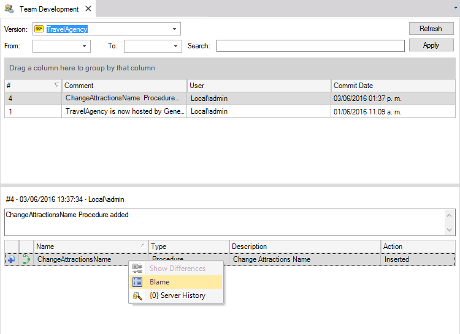
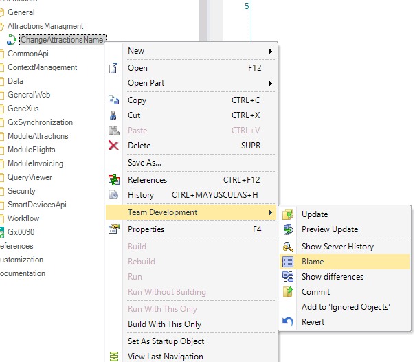
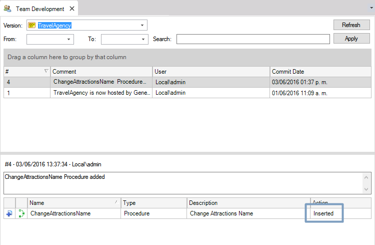
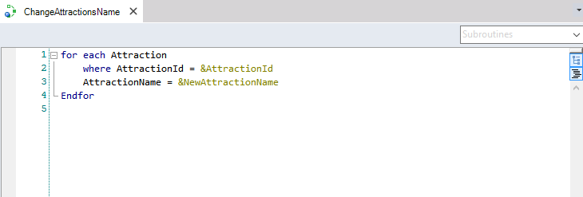
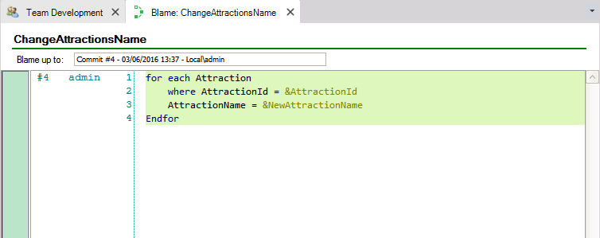
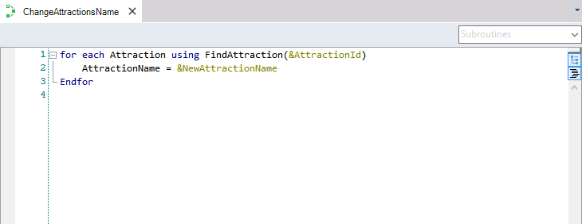
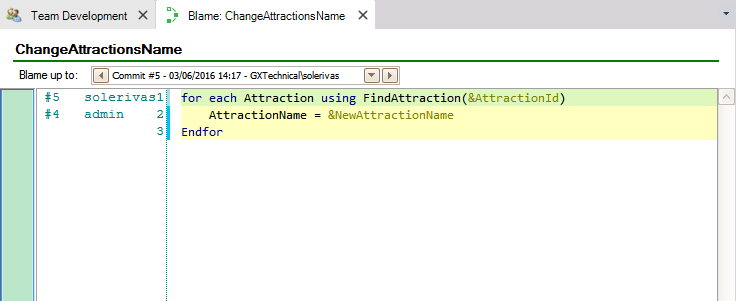
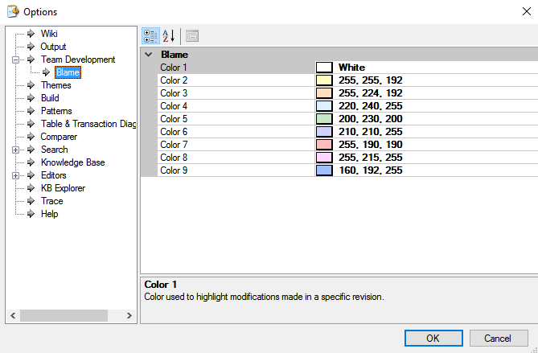

Blame it's a Team Development option which allows knowing when any aspect of an object was modified and who made those modifications by adding information about the author who committed a line, the revision the line was last changed and the date. This option increases the control of all the objects of a Knowledge Base by unifying the objects content with the data related to each modification of that object showing in which Commit the changes were committed to GeneXus Server. The option can be applied to the current or another object version present on GeneXus Server. The option attempts to solve those problems like wondering when, why or who had modified a part of an object when working in Teams and it shows since in which Commit each line or a Procedure was modified to when a tree node transaction structure changed. It can be accessed from the GeneXus IDE at the Team Development History Tab  Or from the Folder View by right-clicking the object and selecting the Team Development option  AvailabilityThe option can be applied to every local Knowledge Base object but only if the object is Inserted.  Usage exampleLet´s imagine a TravelAgency reality and two developers working together. The first developer defines a new procedure which changes the name of a given Attraction:  After the first developer commits the procedure to GeneXus Server and using the Blame option on that procedure, a Blame Tab will open, and the following information will be shown:  Then, the second developer makes a change in the same procedure and Commit it to GeneXus Server:  Using the Blame option on that procedure again, a Blame Tab will open, and the following image will be displayed showing which developer had modified each part of the procedure:  CustomizationThe colors used by the Blame option can be configured using the Options dialog (Tools->Options) under the Team Development node (Team Development->Blame).  |